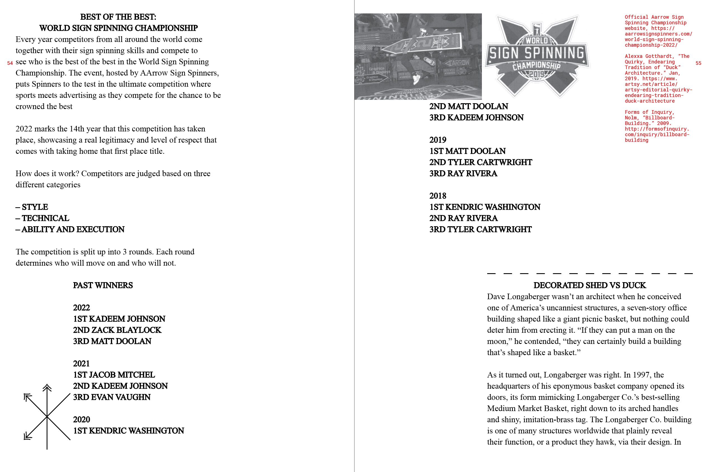
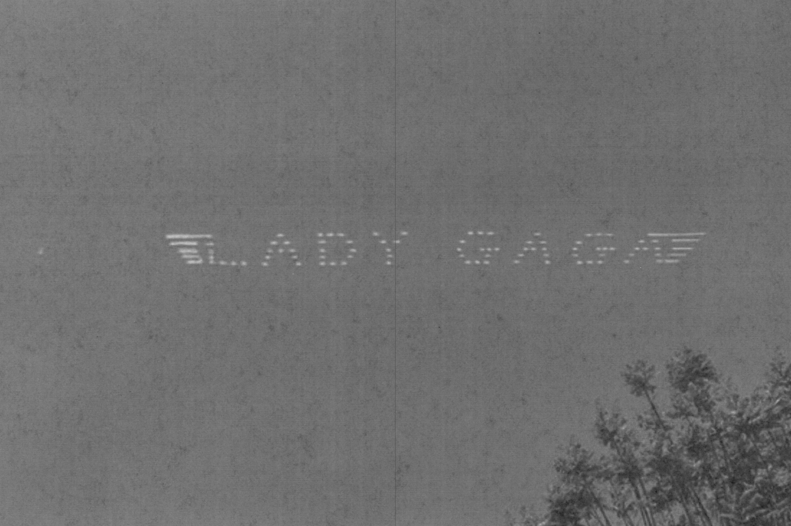
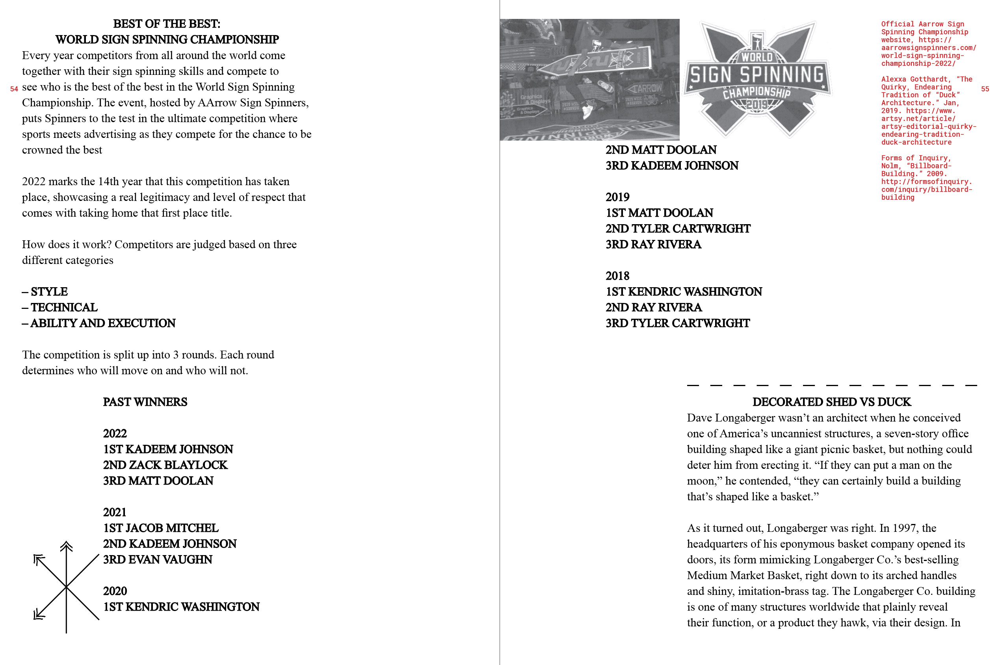
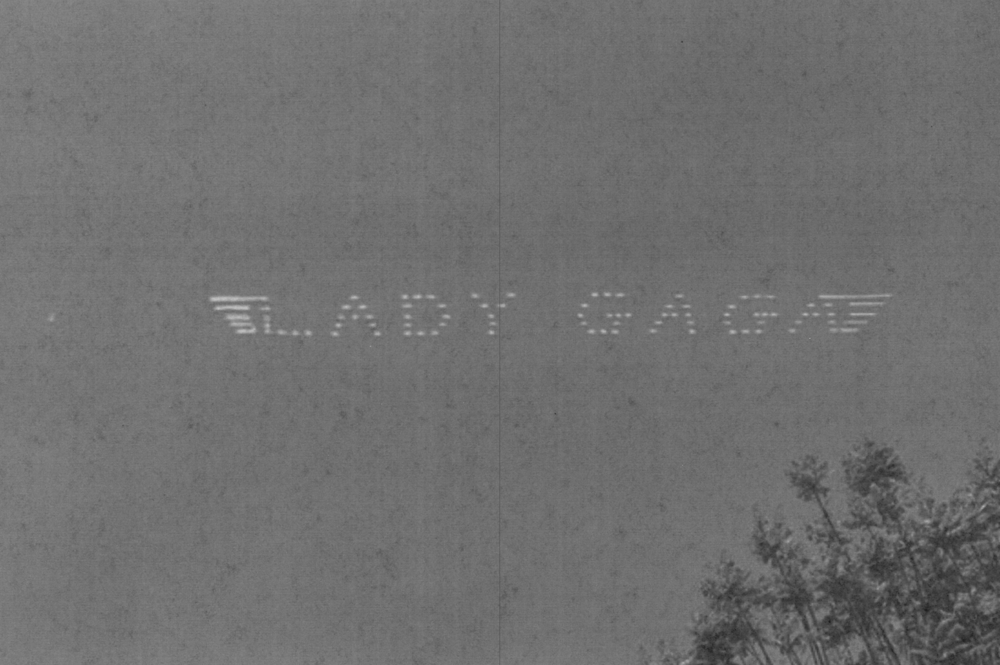

Human beings have developed their intelligence, techniques
and knowledge for the most part through their empirical
abilities. Observing, experimenting, drawing conclusions,
adjusting and starting over, men have built tools, have
learned to master fire, to use plants and have constantly
improved those systems. Scientific research is based
today on a constant back and forth between experience and
analysis.
Hundred thousands years ago, human beings living on the
planet have all been confronted to birth and death, to the
cycle of seasons and stars, to rains and droughts. Facing
those events, they have looked for rational explanations
to better their knowledge of them and try to master
them or at least to influence their course. In spite of
infinite variations, most ancestral religions have in
common their polytheism.
Entities, often anthropomorphic ones, are endowed with
extraordinary powers; they govern the universe and embody
fundamental forces such as the sun, the night, the rain.
The will to give a form to those divinities, to mark
their sanctuaries, to devote objects to them and to keep
worshipping them, is what symbols partly stem from.
The creation of symbolic signs and writings indeed derives
from a need to render things tangible, to neutralize and tame them but also to identify and organize them. We know
for instance that Sumerian writing was created around
3300 BC to resolve the need to account for agricultural
production in order to determine the amount of taxes.Whether it originally stemmed from an administrative or
a religious necessity, symbolic vocabulary was deeply marked by the imprint of its natural environment. We had the intuition that the construction of symbolic forms, including abstract ones, happened in accordance with natural forms. That was confirmed by various researches in neurosciences. Chaingizi has shown that every alphabetical or ideogramatic sign has been elaborated in response
to natural forms. Interestingly, the area of the brain
triggered by reading is the same as the one enabling us
to identify natural forms. Dehaene has shown that the
shapes of letters do not stem only from arbitrary cultural
choices, but have been oriented by our capacity to
recognize the natural forms that surround us. If it leans
on preexisting neuronal competences, reading is all the
more efficient.
The oldest known traces of symbols date back 4000 years,
just like the first works of art. Ernst Cassirer has
studied language, myth, sciences and art as “symbolic
forms”. He has defined three types of such forms:
“Every symbolic form can be traced back according to
a process that goes from the “mimetic” stage to the
“analogical” stage to eventually rise to a purelymsymbolic
form. That process starts with an inclination towards the
object, then moves on to the subject and eventually to the
symbol.”
It is what we observe in the evolution of writings
throughout the world. They are firstly pictogramatic,
they move on to becoming ideograms and eventually end
up being formed of “purely abstract signs For instance,
in Egyptian hieroglyph water was made by one undulating
line a mimetic form. Borrowed by the Phoenician alphabet,
the sign evolved in mem, a term meaning “water.” It’s
an analogical approach in that letter / word / sound
corresponds perfectly. The mem then became (mu) in the
Greek alphabet, written M in capital letters, which is
part of the symbolic order according to Cassirer. The 9 evolution from drawing to symbolizing happens through
the evolution from a “literal” sense to a more abstract
one. This explains how, through epigraphy, we can trace
down a semantic connection, that we’ve lost through time,
between a geometric sign and its initial form. To make
this epigraphic investigation more thorough, we have
followed the path of various modern artists like Wassily
Kandinsky, Paul Klee or Joan Miro, whose researches on
the stylization of form up to the point of abstraction
have been fundamentally inspired by ancient cultures. We
studied this artistic process in parallel to that of the
creation of symbols.


Walter Benjamin put forward the thesis that not alone does translation operate between different languages, but that human language itself is generated by a translational process. Human language originally translated
nothing other than the language of things. While the function of language is generally seen to be one in which things, by being named, are transformed into objects that are communicable and therefore categorisable, Benjamin counters that this capacity is preceded by an act of reception. To hear the language of things and then translate it is a condition of any naming process. This type of perception, which cannot itself be based on the transmission of linguistic content, s made possible by human language’s capacity for imitation or mimesis. Rather than arguing for a concept of language as a purely arbitrary phenomenon, or asserting that it developed from onomatopoetic sounds alone, Benjamin maintains instead that the capacity of language to perceive and produce similarities has been the driving factor in its evolution. However dubious or fruitful such speculation on the oritgins of language might be considered, the thesis of language formation through translation
is significant in two respects. Firstly, Benjamin extends the concept of language to the language of things and, with this broader application of the idea, he introduces another conceptualization of language, referred to as “magical” by Benjamin himself. Secondly, by postulating receptiveness as the necessary antecedent to any articulation, he asserts the existence of a passive condition in human speech. The usual relationship between humanity (active) and the object world (passive), once it is reversed in this way,
is thus reinterpreted. The consequences of that re-articulation are as far reaching as they are worthy of consideration.
Simple system of 100 logical pictorial symbols, which can be operated and read like 1 + 2 =3 in all languages. It can be typed and printed, and used in international communication and commerce, industry and science. It contains also a simple semantics, logic, and ethics, which even children can learn to use in their problems.
Instead of constructing a spoken language, like Esperanto, for international use as an auxiliary language, alternative is
a constructed written ideographic language intended to be universally readable only. As a concept-based language, all characters would be independent of spoken words. Charles Bliss (1897-1985) was born in Austria, and studied chemical engineering at Vienna University of Technology. After graduating he worked as a research chemist and later as chief of the patent department at an electronics company until the outbreak of war when he was sent to a Nazi concentration camp. Following his release in 1938 he moved to England until 1940, then to Shanghai where he was imprisoned as a prisoner-of-war, finally settling in Australia. It was whilst in Shanghai that he was exposed to the Chinese writing system which encouraged him to begin to devise ‘Semantography’ (or ‘Blissymbolics’), a universal symbol system that could
18 be translated into any language, and which he hoped would help to bring about world peace and to promote greater understanding between nations and cultures.
The first billboards as modern audiences would understand
them were, like many things, made of stone and created by ancient Egyptians. The purpose of the first known billboards
was not to advertise the first consumer products but to announce laws outside the city of Thebes in circa 1000 BCE. Unlike simpler forms of advertising, like posters and flyers which are intended to be viewed close up, billboards seek
to attract attention from further away. Ancient billboards required costly labor and resources that limited their use to important state business. As a result, billboards have
rarely been used throughout human history. The circumstances that allowed billboards to flourish in modern society required new technology along with a sudden explosion of consumer consumption.
As a concept, billboards are simple. They’re just a big board conveying a message. But their use requires a purpose and before the Industrial Revolution, only governments and rulers really had a need to communicate with large groups. Then Jared Bell had a need of his own. The explosion of commerce in the 19th century resulting from the steam engine and other innovations created much of our modern world. But it was the invention of lithography in the 1790s by Alous Senefelder allowing for the mass production of printed color flyers and posters that allowed for modern billboards. Jared Bell was an event promoter in 1830s New York seeking to drum up business for the Ringling Brothers Circus.
Though a standard billboard has remained largely unchanged since the 1830s (outdoor electric lighting was a big innovator
for the industry), advertisers do occasionally experiment with new tech in high profile areas. Times Square has long been the center for America’s premiere billboards. Due to its proximity to Broadway theaters, Times Square’s earliest prominent features were marquees advertising various performances. The showmanship of advertising in Times Square has often blurred the lines between billboards and massive sculptures.
Human billboard is someone who applies an advertisement
on their person. Most commonly, this means holding
or wearing a sign of some sort, but also may include wearing advertising as clothing or in extreme cases, having advertising tattooed on the body. Sign holders are known as human directionals in the advertising industry, or colloquially as sign walkers, sign wavers, sign twirlers or (in British territories) sandwich men. Frequently, they will spin or dance or wear costumes with the promotional sign in order to attract attention. Human billboards have been used for centuries. In the 19th century London, the practice began when advertising posters became subject to a tax and competition for wall space became fierce. Prince Pückler-Muskau described the activity in 1820s London as
Furthermore, besides holding signs, some human billboards would wear sandwich boards. Charles Dickens described these advertisers as “a piece of human flesh between two slices of paste board.” It was claimed in The Times in mid- 1823 that such human billboards were a London invention while a familiar sight in London, the “biped advertisement” was new in Paris at that time. The banning of posters from private property in London in 1839 greatly increased the
use of human billboards. As the novelty of seeing humans carrying placards wore off, advertisers would come up with variations on the theme in order to catch the eye, such as having a “parade” of identical human billboards, or having the human billboards wear outrageous costumes. Human directionals are still widely used, especially in areas that have a lot of pedestrian traffic, but even in places that have
a great deal of automobile traffic. For the latter, the signs will frequently be shaped like arrows in order to direct traffic to the location being advertised. Eye Shot, a Lake Forest, California company claims to have invented modern sign spinning using arrow-shaped signs. The modern human directional employs a number of tricks to attract attention,
such as spinning the sign on one finger, throwing it up in
the air and spinning it, or even riding the sign like a horse. Another California company, AArrowSign Spinners, 47 conducts “boot camps” to train its employees, and has
also filed patent applications for a number of its “signature moves."
The newest trend is to have moving pictures on clothing. The first instance of this was done at the 2003 Rugby World Cup, where “Telstra girls” wore T-shirts outfitted with a small television screen and a DVD player, called “TelePAKs.” This was duplicated in the United States in 2004 with “Adver- Wear” “T-Shirt TV,” that made its debut advertising the film I, Robot. In 1999, Vibe magazine predicted that companies in the next millennium would pay people to get tattoos advertising their brands.
Ever sat at the beach or an outdoor event and watched a
plane writing in the sky? It was captivating, wasn’t it? You
try and guess what they are going to say, waiting for the
plane to be finished. The advertiser has gotten your attention 61 longer than if you whizzed past a billboard or glanced at
a newspaper page. And it probably made a more lasting impression.
Skywriting is done by one plane that can generally write up to six characters, with a skilled pilot at times maneuvering upside down as they decide when smoke is needed for the letters. Five to seven planes are needed for longer messages so that the entire message is visible at once.
Banner towing is a form of skywriting where a banner is
towed or dragged behind an aircraft. Since a banner produces a large amount of aerodynamic drag, the airspeed of the towing aircraft is kept low in order to minimize the amount of power required.

Heaven is sending you blessings and answers in the form of signs in the physical world. These are messages that you see or hear repetitively. This card asks you to pay extra attention to signs, as they are part of the answer to your question.
Notice anything that you see or hear three or more times. For instance, if several people recommend the same book, movie or class to you, that is a sign. Observe unusual occurrences, such as angel shaped clouds or clusters of butterflies. Pay attention to items with a special significance, such as a loved one’s favourite song playing on the radio, or a flower that you associate with a particular person or event.
I see signs everywhere, and it’s because I had asked and asked and asked for signs, so many times in fact, without stopping to receive, that at first, I thought I wasn’t getting any! I read the book “Signs From Above,” by Doreen Virtue, Ph.D and I suddenly realized that I was missing the signs by being so vigilant about asking, praying and borderline begging, but not being relaxed, observant and receptive!! The moment that I decided to make a fun game out of seeing, feeling, and hearing signs from my Angels and Guides, was the moment they all started coming in. Since then, I have had some pretty awesome signs in the form of cloud formations, visits from animals and birds that are out of the ordinary, random white feathers in the strangest of places, songs on the radio, dreams, repetitive numbers, rainbows, orbs in photos and more!
I had a humming bird hover about 18 inches from my nose for about a minute; looking so inquisitive and bright it was an incredible experience. Just as I though it was a simple “coincidence”, it dipped down to drink from a flower and came right back up to check me out; three times in total, each for about a minute. Now, keep in mind, your mind must be open to receive and accept the signs that you are getting! Not everyone will believe that this is a sign and I am totally fine with that, I have no expectations and I am not trying to convince, only to share. Birds just happen to be a big connection to the Divine for me. I will attach a photo that I took of three red headed woodpeckers walking along the ground at the park just down the road from my house. About 3 weeks ago I got about 8 feet from a horned owl, and last spring a flock of ravens moved into the tree at the end of my driveway. It’s like the moment I decided birds were signs from the Angels, they lined up to take turns delivering their beautiful messages to me.
I feel blessed to see Angel shaped clouds, and I can’t help but smile no matter what’s going on when I come across a perfectly fluffy white flower on the muddy trail when walking my dog or in my living room or car! Once you decide what the signs are, they will start showing up so much you will feel like a kid in a candy store.
Most of the signs you see on New Zealand roads are
international symbolic signs. This means they use the same
shapes and symbols as traffic signs all over the world.
Symbolic signs are used because they are quick to read and
easy for all drivers to understand. New Zealand’s signs are generally made of reflective material, making them easier to read at night.
You must be able to recognise and understand each type of sign. Some examples of these signs, particularly related to heavy vehicles, are shown on below.


 


